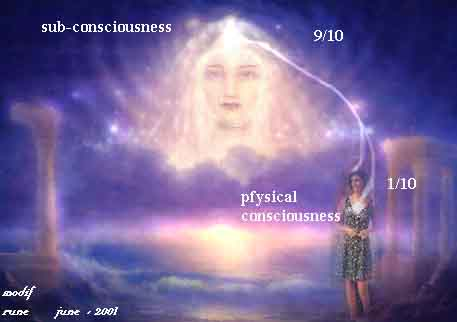

|
From LOBSANG RAMPA's book: BEYOND THE TENTH from 1969. As for all of his books - he claims they are absolutely true - and the people with intuition inside - can recognize the wisdom… (some words are translated to norwegian and there MAY BE some wordmistakes here because this is scanned from the book - and notice that the headlines are inserted by Rune) (the title refer to that the normal, common earth-people is only 1/10 conscious)
 The astral plane and life on the other side On page 13 the theme is on the dead process and the new surroundings…and again about astral travelling, astral plans and some of mediumships..: …our first request is about life after death, or death, or contact with those who have left this life. First of all let us deal with a person who is leaving this Earth. The person is very, very sick usually, and 'death' follows as a result of the breakdown of the human body mechanism. The body becomes untenable, in-operable, it becomes a day case enshrouding the immortal spirit which cannot bear such restraint, so the immortal spirit leaves. When it has left the dead body, when it has left the familiar confines of the Earth, the - …what shall we call it? Soul, Overself, Spirit, or what? Let's call it Soul this time for a change - the Soul, then, is in strange surroundings where there are many more senses and faculties than those experienced on Earth. Here on Earth we have to clomp around, or sit in a tin box, which we call a car, but unless we are rich enough to pay airfares we are earthbound. Not so when we are out of the body, because when out of the body, when in this new dimension - which we will call 'the astral world', we can travel at will and instantly by thought, we do not have to wait for a bus or a train, we are not hampered (hemmet) by a car, nor by an aeroplane - where one waits longer in a waiting room than one spends on the actual journey. In the astral we can travel at any speed we will. "We will" is a deliberate pair of words, because we actually 'will' the speed at which we travel, the height and the route. If, for example, you want to enjoy the wondrous scenery of the astral world with its verdant - and its lushly(frodige) stocked lakes, we can drift as light as thistledown just above the land, just above the water, or we can rise higher and soar over the astral mountain tops. When we are in this new and wonderful dimension, we are experiencing so many changes that unless we are very careful, we tend to forget those who mourn (sørger på) us on that awful old ball of Earth - which we have so recently left.We tend to forget, but if people on Earth mourn us too fervently (sterkt/ivrig), then we feel inexplicable twinges (uforklarlige stikk/smerter) - and pulls, and strange feelings of sorrow and sadness. Any of you who have neuritis or chronic toothache, will know what it's like; you get a sudden vicious (ondt rykk) jerk at a nerve which nearly lifts you out of the chair. In the same way, when we are in the astral world and a person is mourning (sørger på..) us with deep lamentation, instead of getting on with their own affairs, they hinder us, they provide unwanted 'anchors' which retard our progress. Let us go just a little beyond our first days in the astral, let as go to the time when we have entered the Hall of Memories, when we have decided what work we are going to do in the astral, how we are going to help others, how we are going to learn ourselves. Let us imagine that we are busy at our task of helping or learning, and then just imagine a hand jerking at the back of our neck-tweak, tweak(napp), tweak, and pull, pull, pull - it distracts the attention, it makes learning hard, it makes helping others very difficult, because we cannot add our full concentration or attention to that which we should be doing - because of the insistent tug and interference caused by those mourning us upon the Earth. Many people seem to think that they can get in touch with those who have 'passed over' by going to a backstreet medium, paying a few dollars or a, few shillings and just getting a message like having a telephone answered by an intermediary (mellommann). Well, even this telephone business; try telephoning Spain from Canada! Try telephoning England from Uruguay!! First you have the difficulty that the intermediary, that is the telephone operator on Earth, or the medium, is not familiar with the circumstances, may even be not very familiar with the language in which we desire to speak. And then there are all sorts of hisses, clicks, and clunks on the wire, reception may be difficult, reception, in fact, is often impossible. Yet here on Earth we know the telephone number we desire to call, but who is going to tell you the telephone number of a person who recently left the Earth and now lives in the astral world? A telephone number in the astral world? Well, near enough, because every person on every world has a personal frequency, a personal wavelength. In just the same way as the B.B.C. radio stations, or the Voice of America stations in the U.S.A. have their own frequencies, so do people have frequencies, and if we know those frequencies - we can tune-in to the radio station - PROVIDED atmospheric conditions are suitable, the time of the day is correct, and the station is actually broadcasting. It is not possible to tune-in and be infallibly (ufeilbarlig) sure that you can receive a station - for the simple reason that something may have put them out of action. It is the same with people who have passed beyond this life. You may be able to get in touch with them if you know their basic personal frequency, and if they are able to receive a telepathic message on that frequency. For the most part, unless a medium is very, very experienced indeed, he or she can be led astray (ført på villspor) by some nuisance-entities (plagevesener) who are playing at being humans and who can pick up the thoughts of what the 'caller' wants. That is, supposing Mrs. Brown, a new widow, wants to get in touch with Mr. Brown, a newly-freed human who has escaped to the Other Side, one of these lesser entities who are not humans - can perceive what she wants to ask Mr. Brown, can perceive from Mrs. Brown's thoughts how Mr. Brown spoke, what he looked like. So the entity, like a naughty schoolboy who didn't get the discipline that he sadly needed, can influence the well-meaning medium by giving her a description of Mr. Brown which has just been obtained from the mind of Mrs. Brown. The medium will give 'startling proof' by describing in detail the appearance of Mr. Brown who is 'standing by me now'. Well, the very experienced person cannot be deceived (narret) in that way, but the very experienced person is few and far between, and just does not have time to deal with such things. Furthermore, when commerce (forretninger) comes into it, when a person demands such-and-such a sum for a mediumistic sitting, a lower vibration is brought into the proceedings and a genuine message is thus all too frequently prevented. It is unkind and unfair to let your sorrows harm and handicap a person who has left the Earth and who is now working elsewhere. After all, supposing you were very busy at some important task, and supposing some other person whom you could not see - kept jerking (rykke) at the nape of your neck and prodding (stikke) you, and blaring silly thoughts into your ears, your concentration would go and you really would call down all sorts of uankind thoughts upon your tormentor (plageånd). Be sure that if you really love the person who has left the Earth, and if that person really loves you, you will meet again - because you will be attracted together when you also leave the Earth. In the astral world you cannot meet a person whom you hate or who hates you, it just cannot be done, because that would disrupt the harmony of the astral world and that cannot be. Of course, if you are doing astral travel you can go to the LOWER astral which is, one might say, the waiting room or entrance to the real astral world. In the lower astral one can discuss differences with some heat, but in the higher regions - no. So remember this; if you really love the other person and the other person really loves you, you will be together again - but on a very different footing. There will be none of the misunderstandings as upon this Earth, one cannot tell lies in the astral world, because in that world everyone can see the aura, and if an astral-dweller tells a lie, then anyone in sight knows about it immediately, because of the discord (dissonans) which appears in his personal vibrations and in the colours of the aura. So one learns to be truthful. People seem to have the idea that unless they have a lavish funeral (overdådig begravelse) for the departed and go into ecstasies of sorrow, they are not showing a proper appreciation (takknemlighet) of the deceased. But that is not the case; mourning (sorg) is selfish, mourning causes grave interference and disturbance to the person newly arrived in the astral plane. Mourning, in fact, could really be regarded as self-pity, sorrow for oneself that one has lost a person who did so much for those left behind. It is better and shows greater respect and thought - to control grief and avoid hysterical outbursts, which cause such distracts to people who have really left.
(the book is made as answering the most common questions:…. 'Dr. Rampa, you have told us so much about the astral world in your books, but you haven't told us enough. What do people do, what do they eat, how do they occupy their time? Can't you tell us this?' Most certainly I can tell you because I have eidetic memory, that is - I can remember everything that ever happened to me. I can remember dying and being born, and I have the great advantage that I can astral travel when fully conscious. So let us look at this matter of the astral worlds and what one does. In the first case there is not just one astral world, but many, as many in fact as there are different vibrations of people. Perhaps the best way of realising this is by considering radio; in radio there are many, many different radio stations in all parts of the world. If those stations tried to share a common wavelength or frequency, there would be bedlam(spetakkel), everyone would interfere with everyone else, and so radio stations each have their own separate frequency, and if you want the B.B.C., London, you tune-in to those frequencies allotted (tildelt) to the B.B.C. If you want Moscow -you tune-in to the frequencies allotted to Moscow. There are thousands of different radio stations, each with their own frequency, each a separate entity not interfering with the others. In the same way astral worlds are different planes of existence having different frequencies, so that upon astral world X, for example, you will get all people who are compatible within certain limits. In astral world Y you will find another set of people who are compatible within their own limits. Lower down, in what we call the lower astral, there are conditions somewhat the same as on the Earth, that is there are mixed types of people, and the average person who gets out of his body during the hours of sleep and goes astral travelling, he goes to that lower astral where all entities may mix. The lower astral, then, is a meeting place for people of different races and different creeds, and even from different worlds. It is very similar to life upon Earth. As we progress higher we find the frequencies becoming purer and purer. Whereas (derimot) in the lower astral you can have an argument (krangel) with a person and tell him you hate the sight of him if you want to. When you get higher in the astral planes you cannot, because you cannot get people who are opposed to each other. So remember that the astral worlds are like radio stations with different frequencies, or - if you wish - like a big school with different classrooms, each succeeding class being higher in vibration than the one before, so that class or grade - One is a common denominator class, or astral world, where all may meet while the process of assessing (vurderinger) their capacities goes on. Then as they do their allotted tasks - we shall deal with that in a moment - they become, raised higher and higher. Until eventually they pass out of the astral plane of worlds altogether, and enter into a state where there is no longer rebirth, reincarnation, and where people now deal with much higher forms of being than humans. But you want to know what happens when you die. Well, actually I have told you a lot about it in my previous books. You leave your body and your astral form floats off and goes to the lower astral, where it recovers from shocks and harm caused by living or dying conditions on Earth. Then, after a few days according to Earth time reckoning(beregninger), one sees all one's past in the Hall of Memories, sees what one has accomplished and what one has failed to accomplish, and by assessing (taksere) the successes or failures - one can decide on what has to be learned in the future, that is, shall one reincarnate again right away, or shall one spend perhaps six hundred years in the astral. It all depends on what a person has to learn, it depends on one's purpose in the scale of evolution. But I've told you all about that in previous books. Let me mention another subject for a moment before saying what people do in the astral world. A very pleasant lady wrote to me and said, I am so frightened. I am so frightened that I shall die alone with no one to help me, no one to direct me in the Path that I should take. You, in Tibet, had the Lamas who directed the consciousness of a dying person. I have no one and I am so frightened. That is not correct, you know. No one is alone, no one has 'no one'. You may think you are alone, and quite possibly there is no one near your earthly body, yet in the astral there are very special helpers who await by the deathbed, so that just as soon as the astral form starts to separate from the dying physical body, the helpers are there to give every assistance. Just as in the case of a birth, there are people waiting to deliver the new-born baby. Death to Earth is birth into the astral world, and the necessary trained attendants are there to provide their specialised services, so there is no need for fear, there should never be fear. Remember that when the time comes, as it comes to all of us, for you to pass from this world of sorrows, there will be people on the Other Side waiting for you, caring for you, and helping you in precisely the same manner that there are people on Earth awaiting the birth of a new baby. When the helpers have this astral body which has just been separated from the dead paysical, they treat it carefully and help it with a knowledge of where it is. Many people who have not been prepared think they are in Heaven or Hell. The helpers tell them exactly where they are, they help them to adjust, they show them the Hall of Memories, and they care for the newcomer as they, in their turn, have been cared for. (Comment: remember this was written long before all the "near-death-experience-books" came here in the western world in the late 70's - and later there has been published a lot of such books, that confirms that Rampa described the very exact death-progress long before any other - if we shall compare it to these later books from all over the world. That is the best "truth-guarantee" - I feel in many connections with what I later have studied - that Rampa really account for the actual truth!! Or "AS IT IS" - a title of another Rampabook. R.Ø.remark.) This matter of Hell - there is no such thing, you know. Hell was actually a place of judgement near Jerusalem, Hell was a small village near two very high rocks and between the rocks and extending for some distance around was a quaking bog (myr), which sent up gouts of sulphurous vapours, a bog that was always drenched in the stench of burning brimstone. In those far-off days a person who was accused of a crime was taken to this village and 'went through Hell'.- He was placed at one end of the bog and was told of the crimes of which he had been accused, he was told that if he could cross the bog unharmed - he was innocent, but if he failed and was swallowed by the bog he was guilty. Then the accused (anklagede) was goaded (drevet) into action - perhaps a soldier poked him in a delicate part with a spear - anyway, the poor wretch ran 'through Hell', through all the swirling fog of sulphur and brimstone fumes(damp), along the path surrounded by boiling pitch, where the earth quaked and shook, inspiring terror in the strongest, and if he reached the other side - he had passed through the valley of Hell and had been purged(renset) of any offence and was innocent again. So don't believe that you will go to Hell. You won't because there is no such thing. (But some mix described experiences from NDE's "hell" - with "adventures" on the lower astralplane where confused, rancorous entities stay until they reincarnate or are cleaned/prepared for the normal "holydays" on the astralplane. R.Ø.remark.) God, no matter what we call Him, is a God of kindness, a God of compassion. No one is ever condemned (fordømt), no one is ever sentenced to eternal damnation, there are no such things as devils who jump up and down on one and plunge pitch forks into one's shuddering body. That is all a figment in the imagination of crazed priests who tried to gain dominance over the bodies and souls of those who knew no better. There is only hope and knowledge - that if one works for it, one can atone for any crime, no matter how bad that crime seems to have been. So - no one is ever 'extinguished', no one is ever abandoned (forlatt) by God. Most people fear death because they have a murky (dyster) conscience, and these priests who should know better, have taught about hell - fire and aternal torment, eternal damnation and all that. And the poor wretched person who has heard those stories thinks that immediately he dies - he is going to be seized by devils and horrendous things wreaked upon him. Don't believe it, don't believe it at all. I remember all, and I can go to the astral at any time, and I repeat, there is no such thing as Hell, there is no such thing as eternal torment, there is always redemption (forløsning/hjelp), there is always another chance, there is always mercy, compassion, and understanding. Those who say that there is Hell and torment, well, they are not right in the head, they are sadists or something, and they are not worthy of another thought. We fear to die for that reason and for another; we fear to die because the fear is planted in us. If people remembered the glories of the astral world - they would want to go there in droves, they wouldn't want to stay on this Earth any longer, they would want to shirk their classes, they would want to commit suicide, and suicide is a very bad thing, you know, it hurts oneself. It doesn't hurt anyone else, but one becomes one of life's drop-out's when one commits suicide. Think of it like this; if you are training to be a professional person of some kind, a lawyer or a doctor, well, you have to study and you have to pass examinations, but if you lose heart half way through -you drop out of your course and then you do not become a lawyer or a doctor, and before you can become a lawyer or a doctor you have to cease being a drop-out and get back into the class and study all over again. And by that time you find the curriculum (undervisningsplan) has changed, there are different textbooks, and all you have learnt before becomesuseless, so you start at the bottom again. Thus it is, that if you commit suicide, well, you have to come back, you reincarnate again, which is just the same as entering college for another course, but you reincarnate again and you learn all the lessons all over again right from the start, and all you learnt before is now obsolete(foreldet), so you've wasted a lifetime, haven't you? Don't commit suicide, it's never, never, never worth it. Well, that has taken us quite away from what people do in the astral. A lot depends on the state of evolution of the person; a lot of it depends on what that person is preparing for. But the astral worlds are very, very beautiful places, there is wonderful scenery with colours not even dreamed of upon the Earth, there is music, a music not even dreamed of upon the Earth, there are houses, but each person can build his or her house by thought. (But they are therefor not only "castle in the air" - but solid and compact enough for the inhabitants of that frequency-world. R.Ø.remark.) You think it, and if you think hard enough, it Is. In the same way, when you get to the astral world - first you are quite naked just as you are when you come to the Earth, and then you think what sort of clothes you are going to wear; you don't have to wear clothes, but most people do for some strange reason, and one can see the most remarkable collection of garments, because each person makes their own clothes according to any style they are thinking about. In the same way, they build their houses in any style they are thinking about. There are no cars, of course, and no buses, and no trains, you don't need them. Why be cluttered by a car when you can move as fast as you wish by wishing? So, by thought power alone, you can visit any part of the astral world. In the astral there are many jobs that one can do. You can be a helper to those who are every second arriving from the Earth, you can do nursing, you can do healing, because many of those who arrive from the Earth are not aware of the reality of the astral, and they believe whatever their religion has taught them to believe. Or, if they are atheists - they believe in nothing, and so they are enshrouded (innsvøpt) in a black, black fog, a fog that is sticky and confusing, and until they can acquire some sort of understanding, that they are blinded by their own folly (dumhet) they cannot be helped much, so attendants follow them around and try to break away the fog.
Then there are those who counsel the astral people who have to return to Earth. Where do they want to go, what sort of parents do they want, what sort of family conditions, a rich family or a poor family?'What sort of conditions will enable them to do the tasks which they plan to do? It all looks so easy when in the astral world, but it is not always so easy when one is on the Earth, you know. In the lower astral people often eat, they can smoke also if they want to! Whatever they want to eat is actually manufactured from the atmosphere by thought, not so amazing when you think of prana which is believed in implicitly on Earth. So you can eat what you wish, you can drink what you wish also, but actually all that is just folly because one is acquiring all the energy, all the sustenance from the atmospheric radiation's, and eating and drinking is just a habit. One soon shucks (kaster vekk) off those habits and is the better for it. You can take it, then, that one does -much the same in the lower astral as one does upon the Earth. Yes, Mrs. So-and-So, there is a sex life in the astral as well, but it is far, far better than anything you can ever experience on the Earth, because you have such an enhanced (øket) range of sensations. So if you have not had much of a balanced sex life on Earth, remember that in the astral you will have, because it is necessary to make a balanced person. Of course the higher one rises in the astral worlds, that is the more one increases one's personal vibrations, then the better the experiences, the more pleasant they become, and the more satisfying the whole existence becomes. Many people on Earth are all members of a group. You may have, for example (and for example only) ten people whom together really complete one astral entity. On the Earth we have these ten people, and perhaps three, four, five, or six die; well, the person who is in the astral does not become really complete until all the group are united. It is very difficult explaining such a thing because it involves different dimensions, which are not even known upon this Earth, but you have felt a remarkable affinity with a certain person - a person who, of course, is absolutely separate from you. You may have thought how compatible (samklingende) you were with that person, you may feel a sense of loss when that person goes away. Well, quite possibly that person is a member of your group, and when you die to this Earth, you will be united together as one entity. Upon the Earth all these people are like tentacles reaching out to get different sensations, different experiences during that brief flickering (korte blafrende--) of consciousness which comprises a lifetime upon Earth. Yet - when all the members of that group, when all the tentacles (fangarmer) are pulled in, one has in effect the experience of perhaps ten lifetimes in one. One has to come to Earth to learn the hard material things because there are no such experiences in the astral world. Not everyone is a member of a group, you know, but you probably know whole groups of people who just cannot manage without each other. It may be members of a big family, they are always dashing around to see how the others are doing, and even when they marry they still have to forsake their partners at times and rush back home - as if they are all going in like a lot of chickens under the old hen! Many people are individualists, not members of a group upon the Earth, they have come to do certain things alone, and they rise or fall by their own efforts on the Earth. The poor souls often have a very bad time indeed upon the Earth, and it doesn't necessarily mean that they have immense karmic debts because they get suffering, it means that they are doing special work and incurring (pådrar seg..) good kharma for a few lives to come. Really experienced people can tell what other people have been in a past life, but don't believe the advertisement you read - where, for a small sum of money, you can have all your past incarnations told. Don't believe that for a moment - because most of these people who make such claims are fakes. If they demand money for such a service, then you can be sure that they are fakes - because the really trained person does not take money for these occult purposes - as it lowers the personal vibrations…. Here we leave this theme and take in a question on astral travelling - from page 38 in the book: More on astral travelling "I want you to tell us more about astral travel, how we can do it. You've written about it in You-Forever! and in other books, but tell us again. You can-not tell us too much about it, tell us how we can do it .. So go the letters. So go the demands. 'Tell us about astral travel,' Actually, astral travel is the simplest of things, so simple that it is surprising that people cannot do it without trying. But we must also remember that walking is simple. Walking is so simple that we can walk in a straight line, or follow a curved path, and we do not have to think about it at all. It comes natural to us. Yet on many occasions a person has been very ill and confined to bed for some months, and the sufferer has then forgotten how to walk. He or she has forgotten how to walk, and has had to be taught all over again. It is the same with astral travel. Everybody could once do astral travel, but for some strange reason they have forgotten precisely how to do it. How do you teach a person how to walk? How do you teach a person, long encased in an iron lung, to breathe? How do you teach a person to travel in the astral? Possibly only by recounting the steps and the process. Possibly only by being what some would call repetitious (gjentagende) - can one induce a person to teach his or herself how to get again into the astral. Suppose you have a sponge, an ordinary big bath sponge will do, and then you call it the body. Suppose you fill the holes in the sponge with a gas, which clings together. That is, it doesn't disperse like most gases do, it hangs together like a cloud. Well, this gas you can call the astral. It is now in the sponge, so you have one entity inside another. The sponge representing the body, and the gas filling the otherwise empty spaces in the sponge - and representing the astral body. If you shake the sponge - you may dislodge the cloud of gas. In the same way, when your body gives a little jerk (rykk) under controlled conditions the astral body jumps free. The best way to prepare for astral travel is to think about it. Think about it very seriously from all aspects, because as you think today so you are to morrow, and what you think about today - you can DO tomorrow. Ask yourself why do you want to do astral travel. Ask yourself honestly. What really is your reason? Is it merely idle curiosity? Is it so that you can spy on others, or do you want to fly through the night and peer into bedrooms? Because if that is your objective - you would be better off without astral travel. You must be sure that your motives are right before you do astral travel, or even before you try to do astral travel. Then having assured yourself that your motives will stand the strictest inspection, prepare the next step. When you go to bed, alone, make sure you are not tired. Make sure that you are fresh enough, that you can stay awake. Everyone can do astral travel, but the majority of untrained people fall asleep in the process, which is very annoying (irriterende) indeed! So go to bed before you are tired and rest in any way, comfortable in your bed, and then Think that you are moving out of your body. Let yourself become completely relaxed. Have you a tension in your big toe? Does your ear itch (klø)? Have you an ache in the small of your back? Any of these will indicate that you are not truly relaxed. You must be truly relaxed, just as a sleeping cat is relaxed. And having been quite sure that you are relaxed, imagine that 'something' is coming out of your body. Imagine that you are the gas seeping out of the sponge. You might experience a little tingling, you might hear some short, sharp crackles, or you may get 'pins and needles' in the back of your neck. Fine! That means you are coming out. Now be very very sure that you keep still. It is utterly necessary that you do not panic, it is absolutely vital that you do not feel fear, because panic or fear will slap you back in the body and give you quite a fright. It will also effectively prevent you from consciously astral travelling for about three months. Astral travel is normal. It is utterly(fullstendig), utterly safe. No one can take over your body, no one can harm you, all that can happen is this; if you are frightened - unpleasant astral entities will smell or see the colour of fright, and will with the greatest of glee (lystighet) try to frighten you more. They cannot hurt you, they cannot hurt you at all, but it does give them great pleasure if they can frighten you so much that you are chased back into your physical body. There is no secret in astral travel, it just needs confidence(tiltro). It just needs the firm knowledge that you are going to do astral travel while you are fully awake. And the best way to start about it is to imagine that you are travelling, imagine that you are out of the body. This word 'imagination' is badly misused. Perhaps it would be better to say 'picture'. So, picture yourself leaving your flesh body, picture yourself gradually inching out of your flesh body - and floating inches above the recumbent flesh body. Actually picture yourself doing it, actually form the strong thoughts that you are doing it, and sooner or later you will do it. You will find, with the greatest amazement, that you are floating there, looking down upon a padded, whitish-green, flesh body. Probably it will have its mouth open, probably it will be snoring (snorke) away - because when you are out it doesn't matter at all if your flesh body goes to sleep - when you are out. Because - if you get out while the body is awake, you will remember the whole experience. This is what you have to imagine: You are resting completely relaxed on your bed in any position which suits you - provided it is comfortable and relaxed. Then you think of yourself, slowly edging out from the flesh covering, from the flesh body, slowly edging out and rising and floating a few inches or a few feet above the flesh body. Do not panic - even if you do get a few sways and tilts, because YOU CANNOT BE HURT. You cannot be hurt at all, and as you are floating you cannot fall. When you have got to that stage, rest awhile. Just keep still, you don't need to feel panic nor triumph, just rest peaceably for a few moments. And then, if you think you can stand the shock, and depending on what sort of a body you've got, gaze down on the thing you've left. It looks all-lopsided (usymmetrisk), it looks lumpy and heavy, it looks an untidy mess. Well, aren't you glad to get away from it for the time being? With that thought you should take a look at the world outside. So will yourself to rise, will yourself to float up through the ceiling and through the roof. No! You won't feel anything, you won't get a bump or a scrape or a jar. Just will yourself to float up, and picture yourself so floating. When you get out through the roof, stop when you are about twenty or fifty feet above and look about you. You can stop by thinking that you are stopped. And you can rise by thinking that you are rising. Look about you, look at your surroundings from a viewpoint that you have never seen before so far, as you can remember, get used to being out of the body. Get used to moving around. Try floating around the block. It's easy! You just have to tell yourself where you are going, and you just have to tell yourself how fast you are going. That is, do you want a go along slowly as if blown by the breeze, or do you wait to go there instantly? People write and say they have tried everything they know to do astral travel but, for some reason or other, they did not succeed. A person will write and say, '1 had a strange tickling in the back of my neck. I thought I was being attacked and it frightened me.' Another person writes in to say, 'I seemed to be lying on the bed without the power to move, I seemed to be looking through a long red tunnel with a glimmer of something which I cannot describe at the end.' And yet another person writes, 'Oh, my goodness me! I fell out of my body, and I was so frightened that I fell back in again!' But these are perfectly ordinary, perfectly normal symptoms. Each of these symptoms can occur when you are getting out consciously for the first time. These are good signs. Signs that you are able to astral travel consciously. Signs that you have your hand on the door, so to speak, and the door is slowly opening. But then you take fright right on the threshold of this wonderful experience, you panic, and back you go into that damp, miserable clay (leire) case again. Only fear can cause you any real difficulty. Everything else can be overcome. But fear - well, if you will not master your fear of the apparently unknown, what can one do for you? You have to make some effort yourself. You can't put some money in a slot machine and get some pre-packaged astral travel kit, you know. Well, when you get a tickling sensation, it means that your astral body is actually freeing itself from the physical body, and for some particular reason the pro- cess is causing a tickle which is, after all, some slight form of irritation. It just means that you have not been doing astral travel very often, because with practise the separation of the two bodies becomes easier and easier. Just by way of digression (sidesprang) let me tell you this; I was writing this chapter on astral travel, and I suppose I was thinking about it too intensely or something. And immediately I found myself floating above this building - right outside - and looking down. A member of my household was just coming up the road carrying a load of groceries(dagligvarer)! I saw her come in and have a mild listen at my door to see if I was working or not, and then undecided she passed on to another room. I looked about and thought, 'Oh, my goodness me! I'm shirking!' And dived back again straight into the body, and carried on working. But it just shows that when one is practised in astral travel it is no more difficult to get out of the body than it is to leave a room by opening a door and stepping out. Actually it's less effort. It is far less effort. When a person is reclining (ligger tilbake) and then suddenly feels paralysed, that is a perfectly normal sign, there is nothing wrong with it. It just means that the separation of the two bodies is preventing physical body motion, and the so-called paralysis (lammelse) is a misnomer (misvisende) really. It is just a strong physical disinclination (ulyst) to move. One often, at the same time, seems to be peering through a long tube, it might be a red tube, or it might be a black or grey tube. But it doesn't matter what colour it is, it is a good sign, it shows you are getting out. The biggest thing to fear is fear itself, because all these things are perfectly ordinary. There is nothing at all unusual in them. But if you are going to give way to panic; well, you come straight back into the body aith a real 'clunk', and if you come back in misalignment, then you'll have a sick headache for the rest of the day, until you go to sleep again and relocate your astral in the physical. It sometimes happens that one gets slightly out of the body and then a swaying (gyngende) motion is experienced. That's all right, too. It just means you have not learned how to handle the astral body properly. You can think of it as a person learning to steer a motor-car. You get in the wretched (elendig) thing and give the wheel a turn, and turn too far. So you turn the other way, and you find you are turning too far that way. So you progress in a sort of S curve until you learn to manage the steering properly. It is precisely the same with the astral. You start emerging from the body and then, when you are a few inches out, you sort of lose your nerve, you don't know how to get it out a foot, two feet, etc. And so you stay there swaying. The only thing to do is to visualise yourself as OUT! Yes, no doubt much of this appears to be repetition to you. Deliberately it is repetition because you need to get this firmly established that astral travel is quite normal and quite easy, and not at all dangerous. The only thing to fear is of being afraid. And you need only fear being afraid because it puts back your progress. It's like locking on the brakes hard. Once you are in a state of fear you are not in con- trol of yourself. And your body chemistry gets jangled (nærvene på høykant). So do not be afraid, because there is no cause whatsoever to fear anything in the astral. It really is a superb, a glorious, experience to just get out of your physical body and float along in the air. You do not have to do long journeys, you can let yourself just drift, perhaps thirty or forty feet above the ground. You will feel a gentle rise from air currents, especially when you pass over trees. Trees give a nice up-draught, a warm sort of friendly updraught, and if you let yourself float and maintain a constant height over a dump of trees when in the astral, you will find that your, vitality improves very greatly. But this astral travel is a pleasure, which has to be appreciated (verdsatt). There are no words which can adequately describe it. You are out of the body and you feel free, you feel as if you had been recharged with life. You feel as if you are sparkling all over, and it is one of the best experiences of all. It can be your experience too, you know, if you really want it. Thousands of people have written to me saying how surprisingly easy they now find astral travel, telling me of their travels, and telling me that they have seen me on their astral travels. What these people can do, you can do also. But let us go into the matter a little further to try to find out, what is preventing you from enjoying this wonderful experience. First of all, do you sleep alone? That is in your own room. Because if you share a bed with someone else, then you may find it a bit difficult. There is always the fear that another person turning over will disturb one's astral flight. So, while initiating astral travel, you should always be alone, quite alone in your room. One cannot, for example, easily practise astral travel when one lives in barracks with a lot of other men or a lot of other women. Nor can you easily start astral travel if you have just been married! You have to be alone, you have to keep your mind on astral travel and then you can do it. From letters it appears that the greatest vice of those who are trying to astral travel is impatience. North Americans in particular want 'instant astral travel'. They are not prepared to wait for it, nor to work for it, they have no patience. They want a thing faster than fast and quicker than now. Well, it's not done in that way, you have to be in the right condition first. You have to exercise patience just as if you had been in bed a long time - you would have to exercise patience while you were relearning to walk. Have patience, then, and have faith that you can do this thing. Visualise yourself floating above your body because 'imagination' is a most potent force. And if you can get yourself started, well, the rest is utterly simple. Astral travel is the simplest thing that we can do. Even breathing needs some effort. Astral travel needs the absolute negation (nektelse) of effort. After impatience - the next great fault preventing one from getting into the astral state is over-tiredness. People flap about all day, rushing about like a hen with its head chopped off, dashing to the cinema or to the supermarkets and cavorting (danser omkr.) around the country. Then, when they are nearly dropping with tiredness, they get in bed and think they will do astral travel. Well, they do, but they are so tired that they go to sleep and forget all the travelling, or rather forget all the experiences of that travel. Make no mistake about it, you do astral travel when you are asleep, the trick is to stay awake and do it, and it is just a knack which one has to acquire as one gets the knack of breathing. The doctor slaps one's bottom when one is born and 'one draw's an outraged breath, so that one can yell in protest, and breathing is started. Well, I can't come and slap you all on the bottom to start you astral travelling! But it really is a simple matter and needs just a little knack(knep). Impatience and over-tiredness, then, are the two great causes, of failure to remember. There is another cause: constipation (forstoppelse). If you are constipated you are usually so gloomy that the poor wretched (elendige) astral form is imprisoned in a congested lump of clay (overfylt klump av leire). Constipation is the curse (sann plage) of civilisation, and perhaps as it is so important for our astral travel studies that one be not constipated, we should devote a whole chapter to health things. So - read on later in this book on how to get rid of constipation. When you get garbage out of your body you will find that you are so much freer that you can get into the astral. Someone wrote to me and said, 'But look. All these astral bodies that you say float around by day and by night, why don't their Silver Cords get entangled, Why don't they collide? You say that thousands of people leave their bodies and soar upwards like balloons on the end of a string. How can this be without hopeless tangling occurring?' The answer to that is easy; everyone has a different frequency, every physical body has a certain frequency and the astral body has a frequency - several - well, I'm not musical - but let me say 'octaves' higher. The astral body is obviously on a harmonic of the physical body, but the vibration is many million times faster than in the physical body. Everyone has a different frequency, or different rate of vibration, and if you get the B.B.C., London, on your radio, you get the B.B.C., London. You do not get Radio Turkey or Radio Peking on that wavelength or frequency. One could say that the frequencies of radio stations do not interfere with each other, and in the same way the frequencies of different astrals do not interfere with each other, so they cannot collide - so there is no tangling, no confusion. On a busy street in a busy city you will have people bumping into each other, and either apologising or scowling, according to their make-up, but such things never occur in the astral. There are no collisions. The only ones that can come close to each other in the astral worlds above the lower astral are, those who are compatible (forenlige). You cannot have discord(uenighet), and a collision is usually a discord, is it not? Everyone knows that many people say, 'This problem - I can't deal with it now, I'll sleep on it. I shall have the answer in the morning.' Well, that's fair enough, because people with problems take the problem into the astral world and if they can't solve it themselves there is always someone available who can. And then if they can't do conscious astral travel, they still come back with some memory of how the problem can be solved. People like great musicians go to the Other Side and go to a zone above the lower astral. They hear this wondrous spiritual music, and then, because they are basically musical, because they have musical perception, they memorise it. And when they awaken in the morning - or they might even waken specially - they rush to a musical instrument and, as they think 'compose'. Some great composers kept paper and pencils by the bedside so that if, they woke up with 'inspiration' - they could write down the musical notation immediately. This is stuff they have learned in the astral, this is music which they learned in the astral. And it is a legitimate use of astral travel. A great inventor may have seen something in the astral, but possibly he didn't do astral travel consciously. So when he awakens in the morning, he has a wonderful idea for a new 'invention', and he rushes to his notebooks and he writes down specification and draws squiggles. And then - well, he has invented something which the world has wanted for quite a long time. Many highly successful businessmen use astral travel consciously or unconsciously. This is how it works; a man who is very successful at interviewing decides that he has a very tough person to see on the morrow. So when he is in bed he goes through his routine and he talks to himself, and says what he proposes to say to his 'prospect' (utsikt) when he meets him tomorrow. He anticipates the objections and arguments of the prospect and he refutes them as he lies there in bed. Then he falls asleep. His astral has got the idea and when the physical body is asleep, the astral gets out and goes in search of the body, or the astral, of the prospect, and tells the prospect what is going to be said on the morrow and also tells the prospect what action the latter should take. On the morrow at the interview the two greet each like old friends, they are sure they have met before. They find they are getting along famously, the successful interviewer puts over his points to the prospect and really does get 'the action desired. It is simple, highly successful, and entirely legitimate. So if you want to get success in business or love - go in for astral travel. You get your word in first. You get the action you desire firmly implanted into the prospect's mind. A lot has been said about getting out of the body, and you can get out of the body. Once out - you can always return. I suppose never in history has there been an authentic case when a person could not get back. You can get back - all right, but you want to get in the most pleasant conditions - because if you get all slap-happy (likeglad) and just jump into your clay case - you can get a headache. When you are coming back from your astral travel see your flesh body lying there on the bed, usually in a contorted (fordreiet) attitude. Eyes shut, mouth open, limbs in wild abandon perhaps, and you have to get into that body. Visualise yourself lowering, and and lowering. Oh! So gently! Then when you are just barely out of contact, put our own limbs(lemmer) in precisely the same attitude as that of the physical body. And then let yourself be absorbed into the body - like moisture being absorbed by blotting paper. You are in the body (it's a cold and dammy thing indeed) you are in and there has been no shock, no jerk, no unpleasantness. But supposing you were clumsy (klossete) and got in with an awful jerk (rykk). Then you'll find you've got an awful headache, you'll find that you feel sick. There is only one thing to do - no medicine, no drugs, will help you at all - there is only one possible cure and it is this: You must lie still with your feet together and your hands together, and you must let yourself go to sleep - even though it be for a few moments only - go to sleep so the astral body can ease out of the physical body and then sink down and relocate exactly. When it is relocated exactly, you have a sense of wellbeing and no headache. And-that's all there is to it! In this chapter quite a lot has been said about astral travel, far more than need have been said: But the whole idea was to repeat things from different angles so that you could perhaps grasp the underlying statement that it is so very, very easy. You can do it provided you do not try too hard. You can do it provided you have patience. You cannot go along to a ticket agency or travel agency and just book an astral flight, you know. Some of the flights cost a lot of money, but in the astral world - it's all free. And you can have it for free - if you have patience and are not too tired. So go to it. It truly is a wonderful, wonderful sensation.
"High in the sky, beyond the height at aircraft would fly, there hovered a large silver pear shaped object, with the larger part pointing down and the smaller part pointing up. It hovered huge and in some alien way, menacing. "That's not a balloon!' said one man who had recently return from the Air Force. 'If it was a balloon the larger would be at the top instead of at the, bottom.' 'Yes!' exclaimed another, 'And it would be drifting with the wind. Look at those high alto-stratus clouds passing by it, and yet it is stationary. The little town buzzed with consternation and speculation. High above, unmoving, inscrutable, hovered the enigmatic object. Never varying in position, making no motion, no movement of any kind. Slowly the day came to a close with the object there as though glued to a picture of the heavens itself, there unmoving, unchanging. The moon came up and shone across the countryside, and above in the moonlight the object loitered (hang). With the first early dawn it was still there. People who were preparing to go to work looked out of their windows. The object was still there as if a fixture, and then, suddenly, it moved. Faster and faster it went, straight up, straight up into space, and disappeared…. Yes, you know, there are people in space ships who are watching this world. Watching to see what happens. 'Well, why do they not come and talk to us like sensible people would?' you may ask, but the only reply is that they are being sensible. Humans try to shoot them, and a in any way to harm these U.F.O.s If 'the U.F.O.s, or rather the people within them, the intelligence to cross space, then they have the intelligence to make apparatus which can listen to earth radio and Earth television, and if they watch television - well, then they will think they have come to some vast mental home, because what could be more insane than the television programmes which foisted (påprakkes..) on a suffering public? Television programmes which glorify the unclean, which glorify the criminal, which teach sex in the wrong way, in the worst possible way, which teach people that only self-gain and sex matters. Would You dive into a fish tank that you could discuss things with some worms at the bottom of the tank? Or would You go to a colony of ants (maur) - labouring in one of these-glass tanks designed to show the work of the ants? Would you go in there and talk with ants, or with any of these lesser creatures? Would you go into some glass hothouse and talk to some experimental plants, ask them how they are doing, saying: 'Take me to your leader?' No!! You would watch, and if an ant bit you - you'd say, 'Spiteful little things, aren't they?' And be careful that you didn't get bitten in the future. So the people of space, whose one-year-old children would know more than the wisest man on this Earth, just watch over this colony… A very few years ago I lived in Montevideo, the capital of Uruguay, a country which in South America lies between Argentina and Brazil. Montevideo is upon the River Plate and ships of the world pass by going to Rio de Janeiro or to Buenos Aires, or come into the Port of Montevideo. From my ninth a floor apartment I could look out across the River, right out to the South Atlantic - beyond the confines of the River. There were no obstacles, no obstructions, to the view. Night after night my family and I used to watch ufo's coming from the direction of the South Pole straight over our apartment building, and coming lower so that they could alight in the Matto Grosso of Brasilia. Night after night, with unvarying regularity, these U.F.O.s came. They were seen not just by us, but by a multitude of' people, and in Argentina they are officially recognised as Unknown Flying Objects. The Argentine Government are well aware that these things are not the product of hysteria or a fevered imagination, they are aware that U.F.O.s are of surpasing (mer utv.) reality. The day we landed in Buenos Aires - a U.F.O. came in and actually alighted at the main, airport. It stayed, for several minutes at the end of a runway, and then took off at fantastic speed. I was about to say that all this can be read in the press reports, but that is no proof of the truth of it - because too often the press alter things to suit themselves or to get more readers, and I have no faith whatever in anything which is printed in the daily press so, instead, I will say that this U.F.O. landing is the subject of an Argentinian Government Report. Having seen these U.F.O.s night after night, and seen how they can change course and manoeuvre, I state emphatically that these were not satellites flashing across the sky. The times that satellites can be seen varies, and is known to the minute; the times that we saw these other things were different, and in addition we have also seen the satellites. The night sky of Montevideo is remarkably clear, and I had a very high-power telescope of the type used by the Swiss Customs Officials -which ranged from forty magnification up to three hundred and fifty. This world is under observation, but we need not be upset (forstyrres) by that. It is sad indeed that so many people always fear that those who observe wish to do harm. They do not, they wish to do good. Remember that there are ages and ages going back into history, and various civilisations and cultures have appeared and disappeared almost without trace. Remember the civilisation of Sumeria, and the great civilisation of Minoa. Who has been able to explain the enigmatic statues of Easter Island? Yes, someone once tried to and wrot a sort of a book about it, but it's not necessarily accurate, you know. Or, if you want to go to another stage, how about the Maya people? Can anyone say what happened to the Mayan civilisation. Each of these civilisations was a fresh culture - placed upon the Earth to liven up stock which had become, dull and, what I can only term, 'denatured'. There is also a very, very ancient theory, or legend, countless years ago a space ship came to this earth and something went wrong with the ship, it could not take off. So - the people aboard, men, women, and children, were marooned here, and they started another form of civilisation. It is extremely fortunate that, the Hebrew Books of the Old Testament had been translated into Greek long before Christians came upon the scene, because the early Christians, just like the present-day ones, tried to alter things to their own gain. We can, then, find out a lot about ancient history from the Hebrew Books which have not been tampered (tuklet med)with by Christianity, but even they leave us uninformed about the Mayas, the Easter Islands, and the Etruscans. These were civilisations which flourished more than 3000 years B.C. We can know that because Egyptian hieroglyphs can be traced back to the year 3000 B.C., and some of these, traced upon temple walls and in tombs, give information about earlier and very great civilisations. Unfortunately around about two hundred years after the start of Christianity -knowledge of much of this had been lost because of the manner in which Christians altered history to suit themselves, and because, with the rise in power of Christianity, Egyptian temples were closed down and no longer were there educated priests who could understand the hieroglyphs. And so for several hundred years history remained in darkness. Later research indicates that many thousands of years ago a great Race suddenly appeared 'in the Land of the Two Rivers'. These people, now known to us as the Sumerians, have left little of their recorded history. Actually, according to the Akashic Record, the Gardeners of the Earth decided that the 'stock' on Earth was becoming weakened by inbreeding(innavl), and so they placed upon the Earth others who also had to learn. These others are known to us as the Sumerians, and a particular branch of the Sumerians - almost like a family - became the Semites, and they in their turn became the earliest form of Hebrews. But that was about 2ooo B.C. The Kingdom of' Sumeria was a truly mighty kingdom, and brought to this Earth many advancements in culture and science, and many different plants. Certain branch of the Sumerian culture left the founding city and moved to Mesopotamia in round about the year 4000 B.C. In addition they bred and gradually populated areas of high culture. It is interesting to know that when Abraham moved with his herds from the City of Ur in Mesopotamia' and went to Palestine, he and those with him brought legends, which had been family history for thousands of years. They brought with them stories of the Garden of Eden, a land which lay between the Tigris and the Euphrates. This had been the common ground of many, many tribes and people who had been expanding - as their populations increased - over what is known as the Middle East. 'Eden', by the way, actually means 'a plain'. The Book of Genesis was merely (bare) a digest of stories which had been told by the people of Mesopotamia for several thousand years. Eventually civilisations became absorbed. So it was that the Sumerian civilisation, having leavened the stock of Earth, became absorbed and lost within the great mass of Earth people. And so, in different parts of the World and in different times, other 'leavening cultures' had to be set down, such as the Etruscans, the Minoans, the Mayas, and the Easter Island people. According to the old legends the Twelve Tribes of Israel do not altogether refer to the people of Earth, but instead mean one tribe which, was the original people of the Earth, and the eleven tribes, or cultures, which we're put down here to leaven the original which was becoming weakened by inbreeding. Consider, for your own amusement, various tribes; the black people, the yellow people, the whia people, and so on. Now which do you think is the original Earth inhabitant and which are descended from the Mayas - the Sumerians, the Etruscans, and others? It makes interesting speculation. But there is no need to speculate because, I tell you vary seriously, that if you will practise what I have tried to show you in all my books, you can do astral travel. And if you can dd astral travel you can know what is happening, and what has happened, through the Akashic Record. The Akashic Record is no television show where we are interrupted by a few words from our sponsor; here we have the utter truth, here we have absolute exactitude (eksakthet). History as it was, not as it was re-written to suit some dictataor who did not like the truth of his early life, for example. By visiting the Hall of the Akashic Record you can find the truth about the Dead Sea Scrolls - those Scrolls which were found in 1947 in certain caves by the Dead Sea in a district called Qumran. This collection of Scrolls belonged to a certain Order of Jews who, in many ways, resembled Christians. They had a Man at the head who was known as the Teacher of the Rightful Way. He was known as the Suffering Son of God, who was born to suffer and die for humanity. according to the Scrolls He had been - tortured and crucified, but would rise again. Now, you might think that this refers to the Leader of Christianity, Jesus. But this Teacher of the Rightful -Way lived at least a hundred and fifty years before Jesus came to the Earth. The evidence is definite, the evidence is absolutely precise. The Scrolls themselves were part of a Library of this particular Jewish sect, and the Library had been endangered by the Romans; and some of the Jewish monks had hidden certain Scrolls, probably the only ones that they had time to save. There are various ways in which science can determine the age of any reputably antique object, and these Scrolls have been subjected to those tests, and the tests indicate that they are about five hundred years older than Christianity. There is no possibility that they were written after the advent of Christianity. It follows from this that it would pay to have a really sound investigation into the Bible and all religious papers, because the Bible has been translated and re-translated many, many times, and even to the experts many of the things in the Bible cannot be explained. If only one could overcome religious bias(skjevhet), religious prejudice, and discuss things openly, one could get down to basic facts and the history of the world could be set right. There is, I repeat, a good way; and that is to consult the Akashic Record. Now, it is possible for you to do this if you first become proficient (dyktig)in astral travel, but if anyone tells you that he or she will go into the astral for you and look at the Akashic Record - provided you pay him or her a certain sum of money, consider him to be a fake, because these things are not done for money. I hope I have said enough in this chapter to indicate that the U.F.Os are real, and they are not a menace (trussel) to anyone on this Earth. The U.F.O.s are merely the Gardeners of the Earth who come here from time to time to see, what is happening to their stock, and they have been here so much more frequently, and in much greater numbers reeently - because mankind has, been playing around with atomic bombs, and risking blowing up the whole dump. What a terrible commotion there has been about U.F.O.s, hasn't there? Yet, UFO.s are mentioned very extensively in the Greea Legends - and in the Religious Books of many different forms of religious belief. In the Bible U.F.O.s are mentioned, and there are many reports in ancient monasteries, such as: " When the monks were sat down to lunch at midday - having their first meal of meat for many weeks, a strange aerial object came over and panicked the good, Brothars."
UFO.s have been showing increasing activity during a past fifty or sixty years because the people of Earth have been showing increased hostility towards each other; think of the first Great War, think of the second Great War in which pilots of all nations saw what they called 'Foo Fighters', which were indisputably U.F.O.s watching the progress of battles. Then take the matter of airline pilots. It doesn't matter which airline, it doesn't matter which country, because airline pilots all over the world have seen many strange and even possibly frightening U.F.O.s. They have talked about it extensively, too, but in many Western countries there is a heavy censorship about such things. Fortunate it is, too, or the press, with their usual distortion(forvrengning), would twist everything up and make the harmless into something horrendous. It has usually been said, Oh, well, if there are U.F.O.s why have not astronomers seen them? The answer is that astronomers have seen them, and have photographed them; but again there is such a censorship that people in prominent positions are afraid to talk about things they have seen. They are afraid to talk for fear of getting into trouble with the authorities who do not want the truth known. They are afraid to talk because, they fear that their professional integrity will seem to be in doubt, for people who have not seen U.F.O.s are extremely virulent (ondartet) in their hatred for those who have So the pilots who fly the airlines, whether in a commercial capacity or in connection with the armed forces, have seen and will continue to see UFO.s but until the moronic governments of the world change their attitudes, not much will be heard of those sightings. The Argentine Government is surely one of the most enlightened in that they officially recognise the existence of UF.O.s. They were, in fact, the first country in the world to recognise U.F.O.s as actualities. Other countries are afraid to permit any accurate information for various reasons. In the first case, the Christian belief seems to be that Man is made in the image of God, and, as nothing is greater than God - nothing can be greater than Man, who is made in the image of God. And so if there is some sort of creature who an make a space ship which can go through space, visiting different worlds, then that must be hushed (dempet) up because the creature may not be in the shape of Man. It's all distorted reasoning(forvrengt tankegang), but things will change in the not too distant future. Then the military clique cannot acknowledge the existence of U.F.O.s because to do so would be to admit that there is something more powerful than the military clique. The Russian dictators, for example, could not admit the existence of these UFo's - because to do so would lessen their own stature in the eyes of their people. Now all the good little Commies - if there are any good Commie - think that the leaders in Moscow are omnipotent, infallible(ufeilbarlige), and the most wondrous things that ever appeared on Earth. So if a little green man, three or four feet high, should be able to travel from world to world, and not all the resources of the great Moscow leaders could shoot down the little green man, then it would show that the little green man is more important than the Communist powers, and that would never do for the Communists. So, everything about U.F.O.s is banned. People also say that if there were U.F.O.s, the astronauts pr cosmonauts or whatever they call themselves would have seen them. But that's not at all accurate, you know; consider that these fellows who have been in space have just been up a bit higher than any other humans on Earth. They have not really been in space, they have just been in a rarefied atmosphere. They are not in space until they go behind the Van Allen belts of radiation, and they are not truly in space until they have gone to the Moon and come back. (written before Apollo 11). Further, saying that there are no ufos - because if there had been the space men have seen them, is much the same as saying, as you gaze out on the ocean - that there are no fish in the ocean - if there were you could see them!! You get chilly lookong fellows who sit by the side of the sea for to catch a fish. It's a full-time job with to catch a fish. And yet there are millions in the sea. They are hard to see, aren't they, if you just take a glimpse at the ocean. In the same way, if you are shot up into the atmosphere a hundred or so miles above the of the Earth, and you look out of a litlle hole in your tincan - well, you don't see a whole procession of U.F.O.s. For one thing you are too uncomfortable, and secondly you don't have much of a view there. But wait a minute though. If you have listened-in to the astronauts radioing back to Earth you will have heard, or remembered that there have been references to these U.F.O.s seen by astronauts, but in all future replays that reference has been carefully ceasored and deleted. The astronaut in the enthusiasm of the moment has mentioned U.F.O.s. And also mentioned photographing U.FO.s, and yet in all later reports such references have been denied. (But now - more than 30 years after this was written - many astronauts have dared to tell the truth. R.Ø.anm.) It seems; then, that we are up against quite a bad plot, a plot to conceal (skjule) a knowledge of what circles Earth. A plot to conceal the very real existence U.F.O.s. In the press and in various pseudo-scientific journals there have been references to U.F.O.s in the most scarey terms, how wicked these things are, dangerous, and how they do this or that. And I how have got a tremendous plot to take over Earth. Don't believe a word of it! If the U.FO people had wanted to take over the Earth - they could have done it centuries ago. The whole point is, are Afraid that they will have to take over the a (and they do not want to) if the Earth goes on releasing too much hard atomic radiation. These spacemen are the Gardeners of the Earth. They are trying to save the Earth from the Earth people - and what a time they are having! There are reports of many different types of U.F.O.s. Well, of course there are! There are many different types of aircraft upon the Earth. You can, for example, have a glider without any engine. You can have a monoplane or a biplane; You can have a one-seater aircraft or a two-hundred-plus-seater aircraft, and if you don't want noisy aircraft then presumably you could get a spherical gas balloon or one of those very interesting things made by Goodyear. So, if you had a procession of these contraptions (innretninger) flying over darkest Africa, the people there would be most amazed at the variety, and would no doubt think that they came from different cultures. In the same way, because some spacecraft are round, or ellipse shaped, or cigar or dumb-bell shaped, the uninformed person they must come from different planets. Possible some of them do, but it doesn't matter in the slightest - because they are not belligerent(krigerske), they are not hostile. They are manned by quite benevolent (velgjørende) people. Most of these U.F.O.s are of the same 'polarity' as of the Earth, and so they can, if they wish, alight on the surface of the Earth and dive beneath the surface of the sea. But another type of U.F.O. comes from the 'negative' side and cannot come close to the Earth - perhaps I should say cannot come close to the Earth's surface-without disintegrating in a violent explosion with a tremendous clap of thunder, because these particular U.F.O.s come from the world of antimatter. That is, the opposite type of world from this. everything, you know, has its equal and opposite. You can say that there is a sex thing in planets, one is male and the other is female, one is positive and the other is negative, one is matter and the other is anti-matter. So when you get reports of a tremendous explosion or see a vast fireball plunging to Earth and excavating a huge crater, you may guess that a U.F.O. from an anti-matter world has come here and crashed. There have been reports of so-called 'hostile' acts by U.F.O.s. People, we are told, have bea kid-napped. But do we have any proof whatever that anyone has really been harmed? after all, if you have a Zoo and you want to examine a specimen, you pick up a specimen and bear it away. You examine it. You might test its blood, you may test its breath content - you could X-ray it and weigh it and measure it. No doubt all those things would appear to be frightening and very tormenting to the ignorant animal involved. But the animal, when carefully replaced, is none the worse for this weighing and measuring, none the worse at all. In the same way, a gardener can examine a plant. He doesn't hurt the plant, he is not there to hurt plants, he is there to make them grow - to make them better. So he examines the plant to see what can be done to improve it. In the same way the Gardeners of the Earth occasionally pick up a specimen, a man or a woman.Well - so they measure a human, examine him or her - do a few tests, and then put the human back into the human surroundings. And he or she is none the worse off for it, it's only because they are scared silly that they think they are any the worse off. Usually they are so frightened that they concoct (pønske ut) the most horrible tales about what happened to them, when, actually, nothing unusual whatever happened. This world is being watched, and it has been watched since long, long before the dinosaurs thundered across the face of this Earth. The world is being watched, and it will be watched for quite a time, and eventually the people of space will come down here. Not as tormentors(plageånder), not as slave-owners, but as benevolent teachers or guides. Various countries now send what they call a Peace Corps to what are alleged to be under-developed countries. These Peace Corps people - who usually are in need of some form of excitement, or they can't get some other type of job - go out into jungles and teach 'backward' people the things which they really do not need to know. Things which give them false ideas and false values. They get shown a film of perhaps some film stars marvellous palace in Hollywood and then they all get the idea that if they become Christians, or Peace Corps Patrons, they also will have such a marvellous edifice (byggverk) in which to live, complete with swimming pool and naked dancing girls. When the people from space come here - they will not behave like that. They will show people by example how they should go on, show them that wars are not necessary, show them a true religion which can be expressed in the words, "Do as you would be done by." -Before much longer governments of the world will have to tell the truth about -U.F.O.s, will have to tell about peoples from outer space. They know already, but they really are scared to let the public know. But sooner - they do let the public know, the sooner it be possible to adjust, to prepare, and to avoid any untoward (uheldig) incidents when our Gardeners return to this world. (Comment: almost 30 y has gone since this was written - and today there has leaked out very much more information - also through internett - and the secret balloon is near to explode.) People write to me about the so-called "men in Black". Well, that is newspaper, or journal-license. It just means that there are outer space people here upon the Earth observing, recording, and scanning/planning. They are not here to cause trouble for anyone. They are here so that they may gain information with which they can best plan how to help the people of the Earth. Unfortunately too many Earth people like mad animals, and if they think they are attacked they go berserk. If one of these Men (who may be dressed in any colour!) is attacked, then obviously he has to defend himself. But unfortunately his defence is often distorted to be an original attack when its nothing of the sort. there are many types of U.F.O.s. There are many shapes and sizes of people within those U.F.O.s, but these people share one thing in common; they have lived a long time, longer than the people of Earth, and they have learned much. They have learned that warfare is childishness. They have learned that it is far better for people to get on together without all the quarrelling. They have learned that Earth has apparently gone mad, and they want to do some bring the people of Earth back to sanity, and to excessive atomic radiation. And if they cannot that peacefully, then Earth will have to be - quarantine (karantene) for centuries to come, and that would hold up the spiritual development of great masses of people here. So, in conclusion, do not fear U.F.O.s, for there is nothing to fear. Instead, open your mind to the know-ledge that before too long, the people of this earth will have visitors from space who will not be belligerent (krigerske) but who will try to help us as we should help others. *** So from page 97 we can read what Rampa says about handling fear: The first question is: How can one overcome fear? Fear? You must know what you fear. What DO you fear? Do you fear the Unknown? Until you know what it is that you fear you cannot do anything about it. Fear is a harmful thing, it is a shameful thing, it is a thing which stultifies (lammer) progress. How to overcome fear; the best way is to think of that thing which you fear. Think about it from all angles. What is it? Why should it affect you? What do you think it can do to you? Is it going to injure you physically? Is it going to injure you financially? Will it matter in fifty years time? If you carefully analyse your feelings, if you care-fully go into the subject of this Why-do-I fear? You Will surely come to realise that there is nothing to fear. I have yet to find anything, which can make one fear if one really goes into the matter. Do you fear the police, or our old enemy the Tax- Collector? Do you fear things in the astral world? Well, there's no need to because I state most - definitely that if you analyse this object, or this condition, or this circumstance which causes you to experience fear, you will see that it is a harmless thing after all. Do you fear poverty? Then what do you fear? Take it out of its dark closet. Is it your skeleton in the closet? Take it out, dust off the cobwebs(spindelvev), and look at the problem from all angles. You will find that fear vanishes, and always remember that if you do not fear, then nothing in this world or off this world can harm you. And believe me : when I say that people off this world are a lot kinder than the people on this world. Now - we come to the second question, which is: How does one know when one is doing right? Every person, every entity on this world or off this world has a built-in censor, a part of the mind which enables a person to know if he or she is doing right. If a person gets drunk or under the influence of drugs, the censor is temporarily stunned(utslått), and the behaviour of a person who is drunk or is under the influence of drugs can be very bad, and can be far worse than would be the case if the persons personal censor was in working order. You can always tell when you are doing right. You feel right. If you are doing wrong, then you have an uneasy feeling that something is not as it should be. The best way to be sure of knowing if you are doing right or doing wrong is to practise meditation. If you wrap yourself in your meditation robe you insulate yourself from the rest of the world, and your astral form can become disengaged, from outside influence and can give you enlightenment direct from the Overself. If you meditate, you see, it's not just a lump of protoplasm giving you ideas; when you meditate you actually receive confirmation (bekreftelser) of your good or bad from your Overself. And so I say to you - if you are in doubt, meditate, and then you will know the truth. Mrs. Sorock, now you have asked me something! You ask, How can one develop Extra Sensory Powers? Well, sad to say some people never do. Just the same as some people can never paint a picture, some people cannot sing a song or if they do they are soon told to shut up. Some people cannot do E.S.P. because they are so sure that they cannot do E.S.P. But if one is willing to try, E.S.P. is easy. You cannot normally do the whole bunch, you know; telekinesis, telepathy, clairvoyance, clairaudience, psychometry - and the whole lot. If you've been trained in E.S.P. from your seventh year up, then you can do it. But, assume now that you want to learn to do some form of E.S.P. We have to specify something, so let us say psychometry is your choice. You are anxious to practise psychometry. Well, you have to have exercises just as if you are learning to play the piano, you practise the scales, and you go on practising those silly scales day after day, week after week. And even when you are an accomplished musician, you still have to practise scales. Let us get back, though, to this psychometry. You want to learn psychometry so the best thing to dd, is to have a week or two just saying to, yourself in a positive manner that you ARE going to be proficient (dyktig)at psycha metry (or clairvoyance or clairaudience, or whatever it is you wish). You visualise yourself putting your hand, usually the left hand, on an object, and you visualise yourself getting a clear picture, or a clear impression about that object. For one or two weeks, then, you fill your waking hours with thoughts that you are definitely going to do this. Then, after perhaps fourteen days, you wait until the mailman has been, and you take a letter which he has delivered, and you just gently rest your, left hand upon it - before you open it, of course. Rest your left hand upon it. Close your eyes, and sit in any relaxed position. Let yourself imagine (later it will really be so) that you can feel some strange influence coming out from the envelope and tickling the palm of your hand and your fingers. By this time you should be getting some sort of sensation in your left hand. Well, just try to let your mind go blank, and see what sort of impression you get. First it will be crude, it will be utterly rudimentary(uutviklet). You can classify the letter as 'good' or 'bad'. - You can classify it--as 'friendly' or 'unfriendly'. Then open your letter and read it, and see if your impression was correct. If you were correct then you will succeed rapidly, because nothing succeeds like success. First of al try with just this one letter, that is on one day. Next day try two or three letters, or, if you wish, stick to one only, but this time try to 'feel' what the letter is about. Persevere with it, and as you succeed you will go on to much better things. When you are proficient in psychometry - and it only takes practice - you will be able to actually- visualise, or even actually see the person who wrote the letter, and you will know the gist (kjernen) of it without opening the envelope. It is a simple matter, and it merely needs practice. If you are learning to touch-type and you peek at the keys, you are putting yourself back. You have to learn to type without looking at the keys, and as you make progress and hit the right keys in the right sequence, you get confidence and you can go faster. It's the same with psychonietry; as you make correct 'guesses', which are really correct impressions, it strengthens your confidence, and with strengthened confidence you find that you are progressing faster and faster and becoming more and more accurate, and more and more detailed. It is hard work, though, you have to practise, and practise, and practise. And you have first to be alone when you are doing it, otherwise, if there are people about - chattering like a load of monkeys, they will distract you and you will never do it So, practise, and practise alone until you are proficient. And when you are proficient you can do it with your hands or your feet, or you can even sit on a letter and know - what's inside!
Still dealing with Mrs. Sorock, we have her final questions, How can one make sure lessons are learned well enough so we don't have to come and - start all over again? Believe me that when you get a lesson which you FEEL has sunk in, it has indeed sunk in. You want to remember that when you leave this world you leave all your money behind you, you leave your clothes behind you; and this low-vibration physical body as well. But what actually goes with you in place of a bank account - is all the good that you ever learned. So if you have had a lesson or two, that goes with you - you have the results of that on the Other Side. Supposing you are having difficulty with some man; you decide on a certain course of action to bring him to heel(snu), and then you weaken when the time comes for you to implement that course of action. Well, that sets up a negative, it sets up a black mark against you. If you have decided to do a certain thing, which you believe to be right, then you must at all costs do that thing which you believe to be right. If you start to do it,- and turn back, then it acts as a negative, it acts as a barrier, and as some great difficulty which later has to be overcome. To answer your question, than - how to make sure that you learn your lessons well enough so a you do not have to come here again. decide upon what you believe is a correct course of action, and having decided upon that correct course of action, let nothing divert you from your course. Then you will be doing right, and you will not have to come and learn it all over again. You can also practise the old immortal law - Do as you would be done by. If you do that, then you have learned the great law of all, and you do not have to come back and start all over again. ***
"We need spiritual discipline. A religion is a useful thing for inculcating spiritual discipline provided the religious leaders are not fighting among themselves. At the present day religions fall down on the job, and so all the present Earth religions shall, before too long, pass away like shadows disappearing in the night, and a fresh religion shall come to this earth which shall help lift people out of the, darkness and the misery into which they have now sunk.
But the time is not yet. The Final Battle is not yet. First there is more suffering, more disturbances in this, the Age of Kali, disturbances caused by World War 1 in which women deserted their homes and their children and left those children to run wild on the streets. If you get a wonderfully kept orchard(frukthage), an orchard on which great care and endless expense has been lavished, and you suddenly withdraw all care from that orchard - everything soon becomes third-rate. The fruit no longer has the bloom and the fullness of constant care, instead that fruit becomes wrinkled and bitter. People are getting like that. People are now of inferior stock (lavere tankegods), and soon there will have to be the leaving process again so that fresh blood is brought to the Earth. But first there will be more suffering. First the whole world will be engulfed by a form of Cominunism. Not the Communistii of China, where even clocks and cars are supposed to run by the illustrious thoughts of Chairman Mao Tse Tung, and -where, apparently, if a person has some interior obstruction, he just thinks of old Mao Tse Tung, and there is such a disturbance that everything is - cleared away immediately! (this book was written in the 60's). So Earth is in for a sickener, Earth is in for a bad tinie, lets face it frankly. Everything is going to be engulfed in this form of Communism. Everyone will be, given a number - they might even lose their names and identities. All these strikes are going to price things out of existence. The Unions are gaining, more and more power, and eventually they will take over with the private armies of sheeplike workers, and that will be a major step towards the ruination of the Earth. Eventually the press lords, like the robber barons of old, will mobilise their private armies of press workers and they will go to even lower depths in their attacks on people; attacks which are so difficult to stand against when even the meanest type of reporter can write things in the columns of his paper - and the attacked person has no redress whatever. This isn't justice. This isn't fair. And it's this type of sub-human person who is ruling the Earth today and will bring the Earth down even lower and lower. -Until, having unnecessarily touched rockbottom in this, the Age of Kali, the indomitable (ukuelige) spirit existing in some people, will shudder (grøsse) with the shock and the shame of what has fallen -upon the Earth, and the spirit will revolt and will take action which will enable Earth and the peoples of Earth to rise again. But it may be necessary for the peoples of space, the Gardeners of Earth, to come and give assistance. This is the Age of Assassination (ødeleggelse). A great religious leader, Martin Luther King, was assassinaed. He was a good man and had much to give to this Earth. As for the others, well - they were just political people and (I do not want to tread on anyones toes!) history will prove that these were dwarfs raised to giant stature only by the appaling (sjokkerende) power of their advertising machine - an advertising machine which blew out a lot of stiriking hot air and made dwarfs appear like giants, just as you can get a toy soldier and by placing, alight behind him you can make his shadow giant size on the wall behind. But here, too, the toy soldier's shadow is a shadow only, something without substance, something that soon will be forgotten. Martin Luther King was no shadow. He was a good man, working for the good, not only of coloured people, but of people of all colours throughout the world. For, in persecuting blacks, or browns, or reds or yellows, the white people who are doing the persecuting are placing a terrible amount of Kharma upon them-selves individually and collectively, and whatever they are doing now to the coloured people - will have to be atoned for in suffering and toil (slit og ydmykhet) and humility. There would still be time to save this Earth from its degradation, from its shame, if only women would raturn to their homes and look after the children and see that those children had proper training, because it is the lack of training which makes it possible for assassins (mordere) to go about their filthy (skitne)work. It is the lack of training, which enables race riots (opptøyer) to take place, and looting, and rape (plyndring og voldtekter). These things were not common in the days when women had more than equality at home; when she occupied the supreme place of honour as Mother to her family. It would be much, much better if the criterion of womanhood could be: How well behaved are her children? How contented is her husband? How useful is this woman to the community? Is she an example to others? If so she is a woman to be proud of. Now, sad to say, a woman is judged by her mammary development ("brystenes størrelse"), whether they stick up or down, how accessible they are, and how many husbands she has had. Sex is a wonderful thing, but this isn't sex. The people who go in for this type of thing are immature (umodne). They don't know anything about LOVE, but only about the - most functional aspects of procreation, and then, interestingly enough, most of these sex queens are as impotent as a eunuch (kastrert mann) who has been treated twice by mistake! If all of us could issue a prayer that a Great Leader would come to Earth and help to straighten out the mess, that Great Leader would come, not with flaming sword and embattled hosts - because wars never settle anything, wars just make misery, wars make more troubles. It's not necessary to have any of those things. The way of peace is the best, and the best way to get peace is to get women back in the homes teaching decency (sømmelighet) to the male members of the family. They can do it, you know. Remember the old saying? A woman who is good is very good, but a woman who is bad is worse than any man could ever be - no matter how bad. ***
"Humans are nine-tenths sub-conscious. 'Sub' because it is beyond our conscious reach, it is beneath our consciousness. The Overself is above our consciousness, and the consciousness can be likened to the amount of an iceberg which shows above water. Only a little of an iceberg shows above water, the great mass of it lies submerged beneath the surface, in just the same way as the great mass of human knowledge lies submerged just beneath the threshold of consciousness. Hence the name 'sub-conscious'.
Under certain conditions the sub-conscious can be tapped. It is possible by the appropriate (passende) processes to get in touch with the sub-conscious and find out what it knows, and what it knows is this; it knows every-thing that has ever happened to that entity. 'That entity', please, not just that particular human body! By really getting down to, the sub-conscious - one engages in a process like getting down into the basement of some great Library of some great Museum, and seeing the vast array of things which are stored, but which are not on show. Museums, you know, have more things concealed (skjult) than they have displayed. Tap the sub-conscious of a human, and you can find out all about-anything that has ever happened to that human. You can follow the life in reverse. You can take the person now aged, let us say, seventy years, and you can take them back sixty, fifty, forty, and so on right back to the moment of birth, right back to the moment when that person was born to this Earth. And if you then change technique, like a car changing gear, you can follow the sub-conscious beyond birth, you can find the moment when the entity actually entered the body of the unborn baby. You can find out what the entity did before it entered the body of the unborn baby. And if your reason is sufficient good, you can find out what that person was in the past life, or the life before that, or the life before that, and that, and so on. A warning; do not believe all the advertisements which claim that Madame Dogsbody will do all this for you for a fee of one dollar. These things cannot be done for money, they cannot be done for idle curiosity. It needs a lifetime of study and a serious purpose. It is not a circus turn. So dont waste your money! I am one of those who can do this. I can do it for myself, also, and I know a surprising amount about myself, going back, and back, and back. But let me issue another warning; don't believe all these people who wear a shawl (sjal/turban)around their heads or say they will visit the Akashic Record for a few dollars, or a few hundred dollars, and come back with all the knowledge. If they could do this, they would not be doing it for money, they would know better. But if you pay your money down, they will 'come back' with suitable histrionic (teatralske) effects and tell you that you were Cleopatra or Napoleon or Old Kaiser Bill or Castro's grandfather, or even de Gaulle's uncle. They usually try to find out who you would like to be, and then they 'come back' with a great shaking of head, and a great pursing of lips, and all the other effects, and tell you all that you have told them - but they are careful to use different words. No, madam! The world is over-stocked with those who have been Cleapatra. No, sir! The world is over-stocked with those who have been St. Peter or St. John, or St. Somebody Else. And anyhow, what does it matter who you were? You were someone, quite definitely, but what does it matter? You now have a different name, you now have a different body, you now have a different task in life and it doesn't do to dwell on past glories. The past does not matter. The past has made the failures of the present. All you can do now is to live a decent life in the present to make a better future. The best way is to avoid going to fortune tellers and- avoid dealing with those who advertise that they will do this, that, and something else if you pay them enough. If you want to know about yourself, and you have sufficient reason, you can always do it by astral travel. If you want to know something, then try meditation. There is a chapter about it in Chapters of Life. In meditation you have to insulate yourself against Earth currents, because if you have Earth currents circulating around, then you think about Earth things, you think 'Earth-wise'. And you don't want to do that, you want to be able to control the subject of your meditation. So the first requisite (nødvendighet) for meditation - is that you avoid our old friend constipation (oh! it's a very important subject!), and you put on a meditation robe. This is nearly always of black material, and it must cover you from head to foot. It must actually cover your head, and cover most of your face. You don't have to suffocate (kvele) yourself, of course, and if your meditation robe is properly designed - you won't. But the whole point is that you have to be insulated by this black cloth from outside influences. Your body must be protected from sunlight, because sunlight will colour your thoughts, and you don't want your thoughts coloured. You want to think your own thoughts, and have your own thoughts under your own control. If you look in Chapters of Life you will find a picture of a monk. Well, if you are handy with a needle and thread, make up a thing like that, but be sure it's big enough. It doesn't matter if it's like a tent, or like a sack; you are not going to be a fashion model in it, that's not its purpose. Its whole and only purpose is to cut off external influences, so the fit doesn't matter and the larger it is - within reason, of course - the more comfortable it will be. You should keep this meditation robe for meditation alone, and you should not wear it for any other purpose than when you are meditating. You should also keep it safely away so that no one else can use it, and no one else can touch it, because if another person touches it and tries it on, you have that other persons influence in the robe - which you are trying to avoid - and so you have another obstacle. By meditating under this insulated, isolated condition, you are immune to outside influences. Thus, you can get really down to the heart of the matter in which you are interested. You can take yourself through the various stages of meditation, going deeper and deeper and deeper, so that in the end you can be meditating in such a state that you are floating. And when you have reached that stage, you can know quite a lot about what goes on beyond the tenth (the 1/10). Beyond the tenth of consciousness, and into the nine-tenths of sub-consciousness. Remember again, though, that this 'sub-conscious' does not mean that this particular phase of consciousness is inferior (lavere). The word 'sub' usually means 'inferior', but in this sense it is taken to indicate that which is below the threshold of consciousness, whereas supra would indicate that which is beyond, or above, the threshold of consciousness. So the sub-conscious relates to everything that a person knows or has known, or has experienced at any time - since that person first became an entity. Taking the present as our datum line, we can say that all that is past, or all that is stored, is 'below'. Whereas, all that which is to come and which has yet to be experienced on this Earth or in the next world, is in the 'supra-consciousness', which is, therefore, above our datum line. All right! So now you know a bit more about our title of Beyond the Tenth. We deal with, and have dealt with things which people know without knowing why, and the things which people can do although, for the present perhaps, they think they cannot. To wit - astral travel. Anyone can do it! Anyone can do it with a bit of patience and adherence to a few simple rules, but people say, 'oh, I couldn't possibly do that! Really, they are afraid to make the attempt, but you dear Reader - make the attempt, because it truly is a wonderful, wonderful experience to be soaring and sailing above the surface of the Earth, playing with the wind, causing birds, who can see the astrals of people, to fairly shriek (hyle av forbløffelse) with amazement. You try it. You'll find it's the most wonderful thing that has ever happened to you. Of course there is far more to this soaring above the Earth business than just play. One can go to any part of the world, as I have already told you, but that is not the extent of it; there is more-much more-than this. If one meditates, if one becomes really proficient at meditation, and one combines that with astral travel, one is not limited to the face of the Earth. Keep this in mind; when doing astral travel we are not in a flesh body, we are in a body which can penetrate materials which, to the flesh body, would be solid. Do you understand the implications of that? It means that one can sink downwards at a controlled rate, sink down through the Earth and through solid rock. One can see with perfect clarity, although to a flesh body - it would be complete and utter darkness. One can sink down and see perhaps here a giant figure, which was trapped (fanget) half a million years ago and became em-bedded in what is now solid coal. In this solid coal, then, there is a giant figure intact, perfectly preserved, as mastodons (forhistoriske- )and dinosaurs have been preserved intact. For years scientists have thought that the advent of humans, or humanoid races, on the Earth was fairly recent. But they have now come to the conclusion that humanity on Earth is much, much older than previously thought. Our travels through solid rock can tell us that, our travels can indicate to us this; after thousands and thousands of years the Earth goes into a sort of periodic convulsion (krampe) during which the whole surface of the Earth trembles, during which waters recede here and waters rise there. The surface of the Earth seems to boil and seethe(koke), and every trace of the Works of Man upon the Earth rises up and falls down, and gets buried hundreds, or thousands, of feet below the surface of the Earth. Housewives will understand when I say it is similar to making a big cake; you have a basin full of all sorts of unmixed ingredients, and then you insert a big spoon from the bottom and raise up, gradually mixing everything so that all the components, all the constituents, are distributed throughout the cake mix. So, every half million years, or so, the Earth gets rid of unwanted stock and prepares the surface of the Earth for the next bunch, who, it fondly hopes, might be more successful. Life on Earth is old, the Age of the dinosaur and the mastodon and all those creatures was just the start of yet one more experiment, just as in thousands of years to come, this Earth will end as we know it at present. The whole surface will seethe and bubble, and the cities and Works of Man here will tumble down, and be buried thousands of feet below the surface so that anyone coming to Earth would say it was a new world which had never been inhabited. It takes a lot of experience to do this type of astral travel. But I can do it, and I can tell you that You can do it also - if you will practise sufficiently, if you will have faith in your own ability, and if you will remember that you cannot do it to bring back messages for other people at so many dollars a visit! I have seen deep down in the Arctic ice, hundreds of feet, or even thousands of feet below the surface, strange forms. A different form of human, a purplish type of person with different characteristics from present-day humans. Present-day humans have - just for example - two breasts and ten fingers. But I have seen purple people entombed absolutely intact, and they have had eight breasts and nine fingers on each hand. Probably some day research will exhume (grave opp) some of these people, and then there will be a nine-day wonder about it all. Some day there will be a digging machine which will be able to excavate the ice, and show some of the people and some of the cities buried incredibly deep in the ice, cities of a people who lived and walked the surface of this Earth hundreds of centuries before there was any recorded history whatever on this Earth. This was a time when there was only one continent on the Earth, and all the rest was water. When South America and Africa were one, and when England was just a part, of mainland Europe; when Ireland was just a mountain peak stretching miles - yes, miles - up into the very different air. At one time all the world of land was one mass extending from the North Pole to what is now the South Pole. It was like a bridge linking one side of the Earth to the other. Australia, China, and America, all were one, all joined to what is now Africa and Europe. But in the earth-shakes, in the shivering tremors, which threw down civilisation and threw up fresh earth and rocks to hide that civilisation, and because of centrifugal effects, that one solid mass, that one continent of Earth, broke up. And as the Earth shivered and trembled, the seabed crept along, taking bits of land with it, land which became Australia, America, Europe, Africa, and so on. With practice in astral travel, with considerable practice in meditation, and combining the two together, you can actually see all this as if you were in that item beloved of the Science Fiction - a time machine. There really is a time machine, you know, a very definite, working, time machine; it is the Akashic Record, wherein everything that has ever happened to this Earth is recorded. It's like having an endless number of cine (små)cameras recording everything that ever happens, day or night, and blending them all together into one continuous ever-running film which you can 'tap into' by knowing how, and by knowing the age at which you desire to look.(The danish visionary Martinus calls it the memorybody of the earth. R.Ø.remark). It is truly a fascinating thing to see a civilisation upon the Earth, a flourishing civilisation, but one in which the people are very different from the humans whom we now are accustomed to see. In this particular civilisation, for example, people moved about not in motor cars, but on what may well be 'the origin of' the old story about the flying carpet; they moved about on platforms which looked for all the world like mats. They sat crosslegged on these things, and, by manipulating a little control which looked like a woven pattern, they could rise and soar off in any direction. In the Record we can watch all this, and then as we watch - we have an effect just as if some clumsy person were shaking a chess board on which all the men were set up for a good game. As the chess-board men would tumble (falle) - so did the people of the then-Earth tumble. The Earth itself yawned, great gaping chasms (gapende kløfter) appeared, and buildings and people toppled (veltet) in, and the Earth shuddered and closed up. And after a time the heaving (rykkninger) and rolling of the surface ended, and the Earth was ready for the next 'crop'. In this form of astral travel, also, one can go deep deep down into the Earth, and one can see perhaps intact afterfacts of that Age, or remnants of large buildings. One can go to Arctic or Antarctic regions, and go deep down and find people and animals who have been quick-frozen to death, and because of the cold and the quickness of the onset of the cold, they have been preserved, utterly intact as if they merely slept and waited a shaking hand to awaken them. As one looks one can see different chest developments, different nostrils (annen brystutv.og nesebor-), because the atmosphere of the Earth a few million years ago was very different from what it is today. People of today would not be able to live in the atmosphere of those times, just as people of those times would not have been able to breathe the atmosphere which we now optimistically call 'clean air'. Then there was far more chlorine, far more sulphur, in the air. Now we get the stink of petroleum fumes(røyk). Another thing that you can see, and which you, like I, will no doubt find fascinating, is that petroleum is unnatural to this Earth (exactly the same says the former named Martinus - about this stuff - R.Ø.remark.) Petroleum is not native(medfødt) to this Earth. By the Akashic Record, a planet collided with this Earth and caused this Earth to stop for a moment, and then spin in the opposite direction. But the collision disintegrated the other planet, and much of its seas poured down through space on to this Earth, The seas of that planet were what we call petroleum. It poured down and saturated (mettet) the Earth and sank into the Earth, and went on down until it found a level and a strata (lag) which it could not penetrate, and there it lay and collected, and awaited the coming of humans who would one day pump it up and invent a perfectly horrible machine or machines, which would use this petroleum. When all the petroleum has been used up there will be no more made, because, as I have said, it is just spillage (spill/avfall) from another world. Have I said enough to really induce you to practise astral travel? It's a wonderful thing, and what we might term mundane (ordinært) (because it, deals with the Earth) - astral travel and meditation combined can show you all you could ever want to know about this Earth. So, why not try it? Why not have faith and patience, and really get down to practising astral travel? ***
…one could say that this life and the astral life are represented in this manner. The coarse vibrations of sound would represent life on earth - but the finer and higher vibrations of sight would represent the astral. There are many senses available to us in the astral, which we do not even know about when in the physical. People write to me and they ask how is it possible for a fourth dimensional person to - well, as an illustration - drop a stone into one's living room. I think the person who wrote had just read an account in a newspaper about a haunted house wherein stones were thrown into locked rooms. The answer to that is that in the third dimensional world of the flesh, we are only able to perceive in the dimensions of the flesh, and if there was an opening somewhere else, the flesh body's eyes would not be able to perceive it. Let us assume that humans can only look down, or they, are two dimensional. So, as they can only look down they cannot see the ceiling above. But if a person outside the room can perceive that there is no ceiling there, then that person can easily toss a brick in to the person who cannot look up. That is rather a crude way of explaining it, but what really happens is that every room, or everything on Earth, has another opening, another aperture (åpning), which humans on Earth cannot perceive - because they lack the necessary organ with which to perceive that dimension. Yet a person who is in a fourth dimensional world can make use of that opening and pass things through it into what, to the third dimensional inhabitant, is a closed space. This type of "joke" is often played by lower entities who like to pose as poltergeists. We must not forget the lady who wrote in and asked me if I could explain in simple terms the nature of telepathy. She had read my other books, but apparently this subject of telepathy had her completely baffled. Let's see what we can do, shall we? Even scientists now agree that the brain generates electricity. There are medical procedures in which brain-waves are charted. A special apparatus is placed on the head, and four squiggly (snirklede) lines indicate four different levels of thought. For some strange reason - these four squiggly lines are given Greek names, which doesn't concern us at all. But the brain generates electricity, and the electricity varies according to what one is thinking - in much the same way as if when one is speaking into a microphone - the words generate a current which continuously varies in intensity according to what is being said. In a tape recorder, for example, one speaks and ones speech impresses minute magnetic currents on a specially prepared tape. Afterwards, when the tape is played back, one obtains a reproduction of the original speech. The human brain generates an electric current which other brains can pick up, in much the same way as the tape on a tape recorder picks up the minute impulses from voice vibrations, which are transferred to electric impulses. When you think, you broadcast your thoughts. Most, people are immune to the noise of the thoughts of other people, and fortunately so because everyone is thinking something all the time, and unless people were immune to that continuous, non-stop, never-ending noise, one would go quite round the bend. By special training, or by a fluke of Nature, one can tune-in to thoughts, because, as our brains generate electricity, so they are able to receive electric impressions. It is a form of telepathy which keeps the body, in touch with the Overself, the telepathy in this instance being a very special ultra high frequency current going from the brain of the flesh body, by way of the Silver Cord, and on to the Overself. But, to reply in the simplest possible terms to the question, How does telepathy work? It is necessary only to say that every brain acts as a radio transmitter and radio receiver, and if you knew how to switch on your receiver, you would be inundated (oversvømmet) with everybody elses thoughts. You can pick up the thoughts of those with whom you are compatible - far more easily than you can pick up the thoughts of those with whom you are not compatible. And a good exercise is to guess what a person whom you know well is going to say next. If you 'guess' for some time, you will soon discover that your successes are far outstripping the laws of chance, and when you begin to realise that you are well on the way to telepathic communication with the person with whom you are compatible. Here again, it is a matter which needs practice and patience, and when you are telepathic, you will wish you were not, because life will be a constant babble, what with humans and animals all the time talking to each other. |